La propiedad
Las habitaciones y disponibilidad
Dos habitaciones con baño privado, wifi en toda la casa, servicio de té en la habitación.
Dispone de wifi en las habitaciones. Servicio de té en cada habitación.
En el piso superior
La habitación familiar
La alcoba permite dormir a 2 personas en camas gemelas. El conjunto de la habitación mide aproximadamente 60 m² (alcoba + sala principal). También cuenta con aseo y ducha.
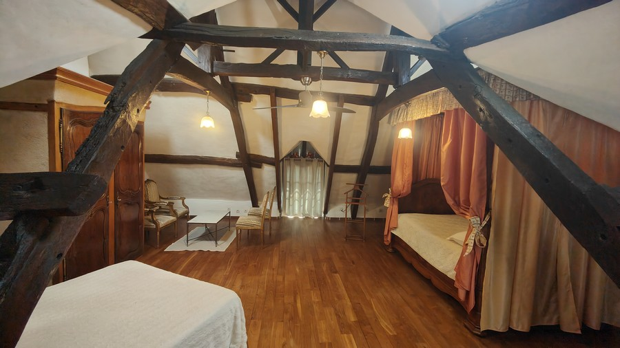
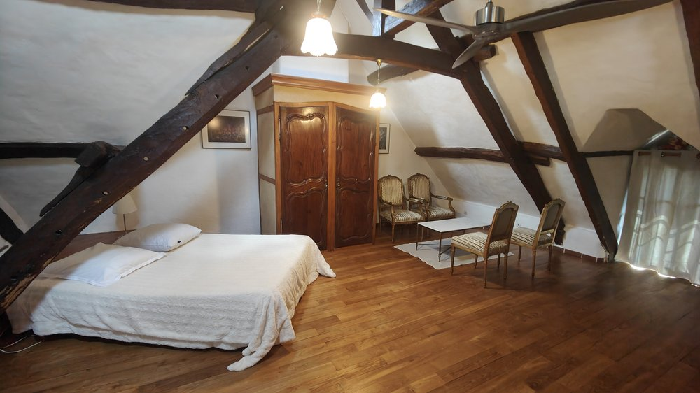
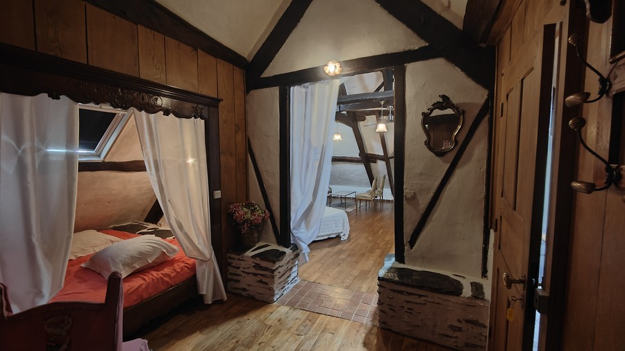
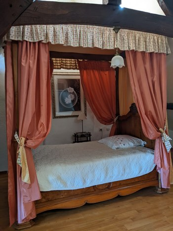
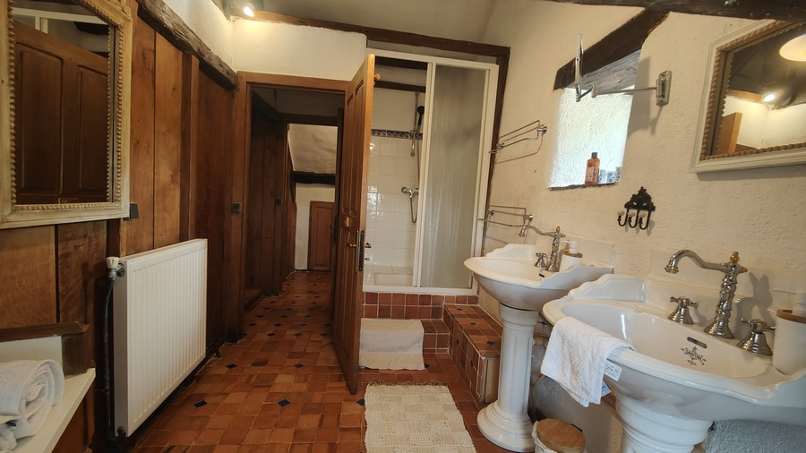
En la planta baja
La habitación doble
Una habitación doble con una cama de 160, 18 m².
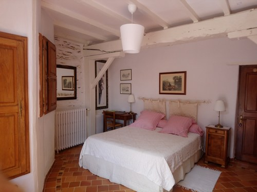
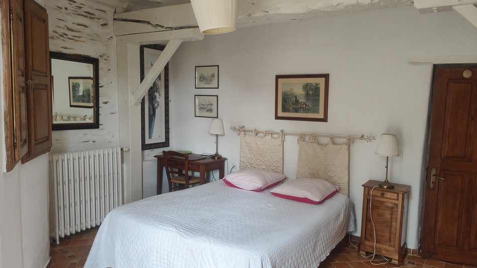
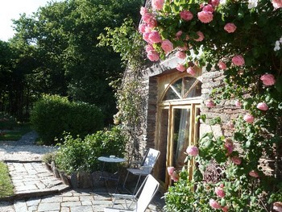
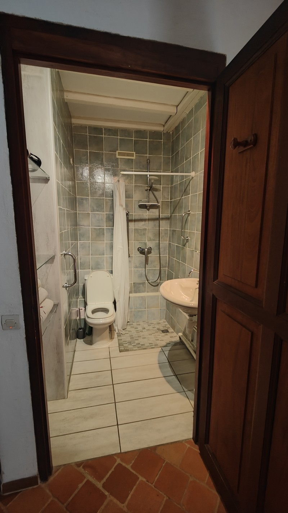
Por la mañana
El porche acristalado y el desayuno
Desayuno abundante con numerosos productos locales y de elaboración propia.
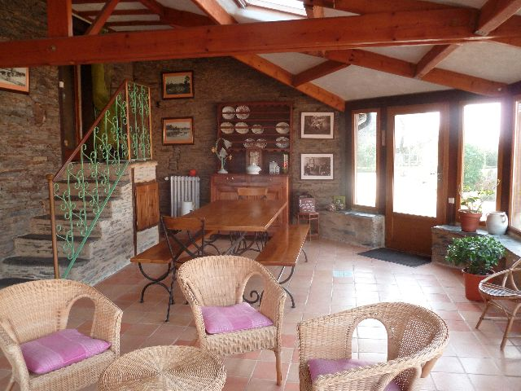
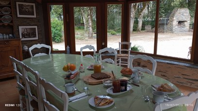
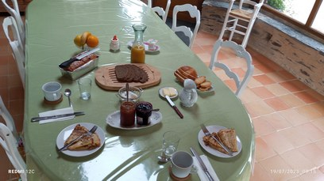